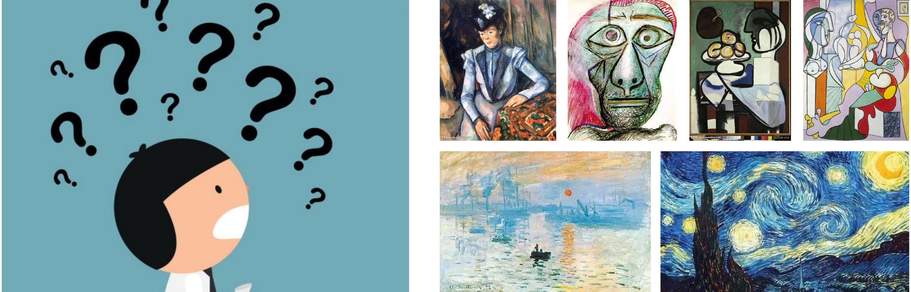

In the summer program at CDM in Vancouver, Canada, we made the project The Final Piece. This is a project for people who want to get closer to famous artists. The project is a vr museum, and user can experience the artists’ life story and interact with the elements in the scene. We hope that people can immerse and enjoy more.
My roles in the group are: group leader, narrative designer and 3D modeler.
1.People need specific knowledge to understand art pieces.

2. Art explainer resource is hard to get.

3. Searching a painting with our phone may interrupt our immersive art experience.
We want to enhance people's gallery experience by giving narratives and immersive visual experience, so that audience can have a deeper understanding of the painting.
By interviewing our classmates and professors, we concluded some user requirements for the project.
1.Have less people in gallery, so the user can concentrate more.
2. Feeling the emotion that the artist had may help the user have a deeper understanding of the work.
3.The user may love to have free but unique souvenirs.
And these are the reasons that I chose VR to develop this project.
We chose Van Gogh’s last painting in his life, “Wheatfield with Crows”, as an example. We also reverted the painting "Van Gogh's bedroom" to VR scene, and added another painting room (using our imagination).The background story happened between 1889 and 1990, when Van Gogh reached his peak period, as if step into the painter's life and get a glimpse of his emotion.
Read the biographical novel "yearn for life”, searched for information about Van Gogh, and reverted the story into the art scheme. Sketched out the room arrangement. Drew 2D elements.
During that two weeks, I learned how to use maya for the first time. I made all the models, and drew the model texture. Models need to be separated into different parts, so that user can play with them in VR.

We searched and applied the open source code in Unity, with the help of our professors. We imported 3D models in Unity, added animation and colliders and so on. After 3 nights of staying up late, we completed the programming part. We tested so many times using HTC Vive. And finally it worked!!!

At the end of the project, we invited some professors and students at CDM to play and test. Then we asked some prepared relevant questions to them. According to their feedback, we improved interaction logics and enriched the detail, including opening cinematic and the storyline.